MARKET NEWSROOM
The reporting
behind the signals
A visual source ledger for the selected market, connecting original reporting with the current intelligence view.
LEAD REPORTING
Stories setting the frame
The opening stories in the current regional source set.

ABC News · 2026-10-04 01:29:15 UTC
Regional audiences to lose Network 10, as licensee warns of TV's future
VIEW STORY ↗
ABC News · 2026-10-04 01:25:26 UTC
Breaking: Man who allegedly crashed into Newcastle Knights fans refused bail
VIEW STORY ↗
ABC News · 2026-10-04 00:46:41 UTC
Treasurer downplays chance of cost-of-living relief amid surging debt
VIEW STORY ↗
ABC News · 2026-10-04 00:13:52 UTC
AFP confirms investigation of flydubai co-pilot's Australian links
VIEW STORY ↗MORE HEADLINES
Follow the reporting
The remaining 56 stories in the current source order.
Headlines 005—016 12 stories
 005
005ABC News · 2026-10-04 00:13:13 UTC
↗'Unnecessary and cruel': People with MS to lose home care
 006
006ABC News · 2026-10-03 23:00:53 UTC
↗Police say ball bearings used to smash windows at government buildings
 007
007ABC News · 2026-10-03 23:00:00 UTC
↗008A doctor said Tim was incapable of love. His mum knew otherwise
ABC News · 2026-10-03 22:42:25 UTC
↗009On duty just after 6pm, these paramedics' shift is about to go bad
ABC News · 2026-10-03 22:40:11 UTC
↗Houthis target Saudi oil facility as hostilities escalate in Yemen
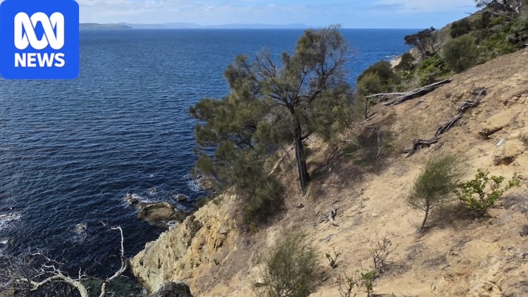
010ABC News · 2026-10-03 21:43:30 UTC
↗Two helicopter rescues in Tasmania after separate bushwalker mishaps
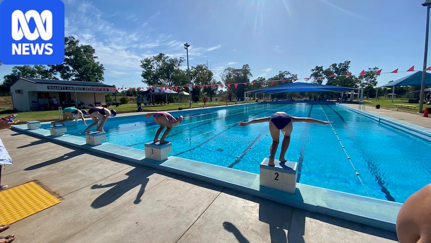
011ABC News · 2026-10-03 21:30:25 UTC
↗012'Forgotten' outback town faces scorching summer without a pool
ABC News · 2026-10-03 21:06:54 UTC
↗'Really unfair': Victim-survivor's almost two-year wait for her own records
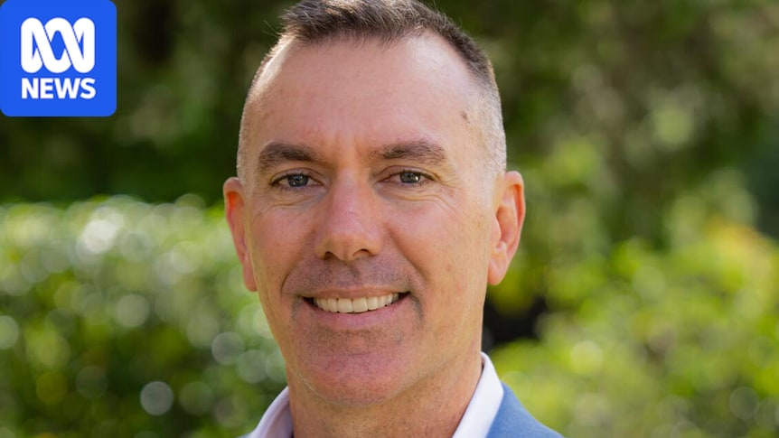
013ABC News · 2026-10-03 21:05:03 UTC
↗014Workplace dismissal lawsuit rocks top levels of cancer charity
ABC News · 2026-10-03 21:02:26 UTC
↗Up There Cazaly singer vowed to make AFL grand final after horrific fall
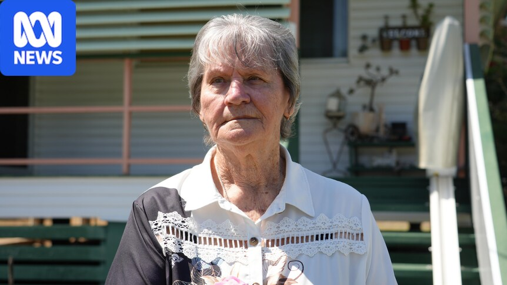
015ABC News · 2026-10-03 21:01:00 UTC
↗016This rural town has 2,000 people and, soon, not a single GP
ABC News · 2026-10-03 20:50:52 UTC
↗Tennessee prisons chief resigns after failed Christa Pike execution
Headlines 017—028 12 stories
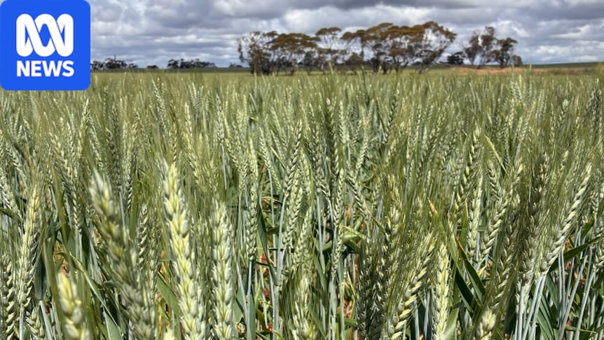
017ABC News · 2026-10-03 20:33:42 UTC
↗018Harvest starts on SA crops that 'have not had a setback all season'
ABC News · 2026-10-03 20:29:38 UTC
↗019SA's first musical theatre company brings talent home in debut stage
ABC News · 2026-10-03 20:29:25 UTC
↗Aussie duo and new world number one fall at China Open
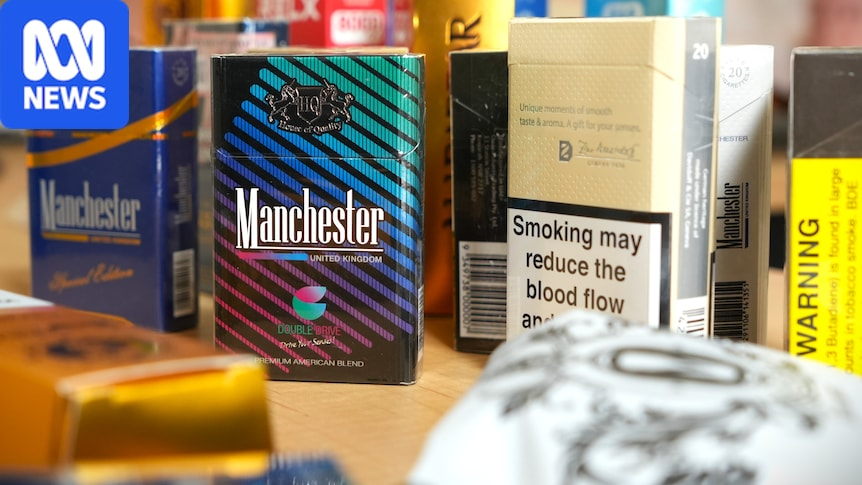
020ABC News · 2026-10-03 20:12:17 UTC
↗021Social media giants allowing illegal tobacco ads, Quit says
SMH Business · 2026-10-04 05:00:00+11:00
↗We are crusading against things that would keep us safe – like data centres
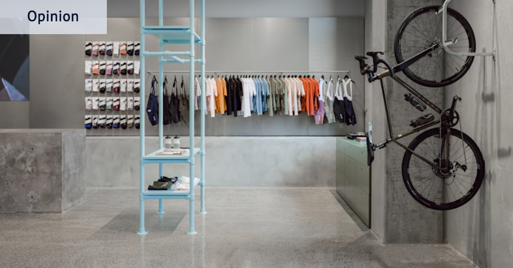
022SMH Business · 2026-10-03 15:00:00+10:00
↗023Steel, concrete and coffee: The new look for cyclists
SMH Business · 2026-10-03 09:00:00+10:00
↗024Rack and ruin: Australian fashion is going through its own spring cleaning
SMH Business · 2026-10-03 05:00:00+10:00
↗025Not OK, Boomers? The repercussions of a generation on its way out
The Age Business · 2026-10-03 05:00:00+10:00
↗026The Boomer exit will reshape Australia
SMH Business · 2026-10-02 17:06:37+10:00
↗Australian shares limp ahead to end four-week losing streak
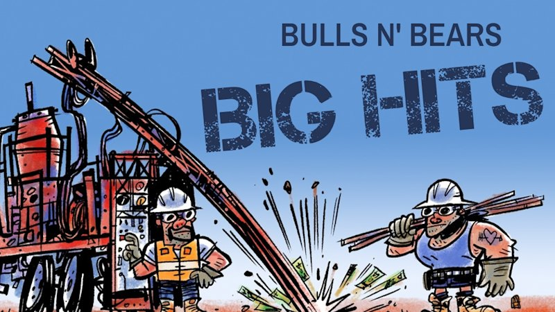
027SMH Business · 2026-10-02 16:30:37+10:00
↗028Big Hits: Solstice Minerals, Kantra Copper and Brazilian Rare Earths
SMH Business · 2026-10-02 15:23:32+10:00
↗The Iran war is making Australia’s gas industry richer
Headlines 029—040 12 stories
 029
029SMH Business · 2026-10-02 15:19:11+10:00
↗ASX Runners of the Week: Dateline, Mamba, Image Resources & BOA
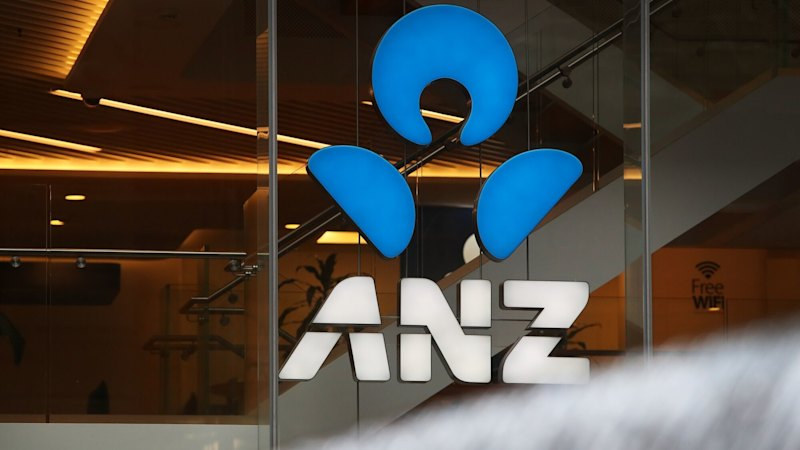
030SMH Business · 2026-10-02 13:56:42+10:00
↗ANZ drops KPMG from audit job as accounting body fails to land a hit
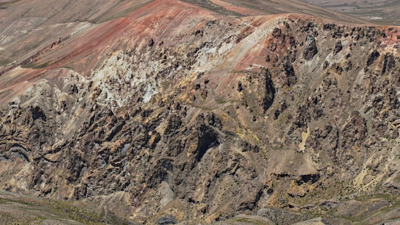
031SMH Business · 2026-10-02 11:26:16+10:00
↗Patriot puts 3km Peru silver corridor under microscope
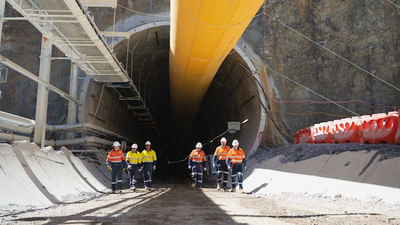
032SMH Business · 2026-10-02 09:51:47+10:00
↗13-year-long bribery investigation by AFP ends with no prosecution
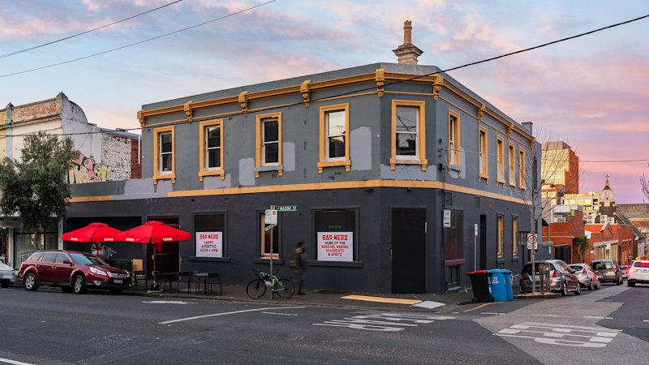
033SMH Business · 2026-10-02 05:00:00+10:00
↗Publisher Morry Schwartz plays publican at Collingwood’s Bar Nero
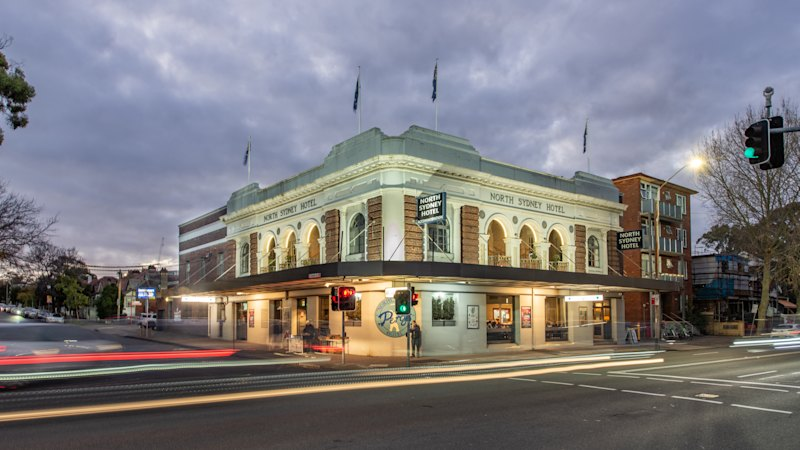
034SMH Business · 2026-10-02 05:00:00+10:00
↗035Last drinks: Owners sell North Sydney landmark for $28m
SMH Business · 2026-10-02 05:00:00+10:00
↗036The good, the bad and the grumpy: Will Joe Aston’s Rampart go soft on its corporate backers?
SMH Business · 2026-10-02 05:00:00+10:00
↗037Unemployment probably does need to climb … for now
SMH Business · 2026-10-01 18:35:00+10:00
↗038Trump’s ‘betrayal’ of America’s heartland will cost him
SMH Business · 2026-10-01 18:00:00+10:00
↗039The hidden traps lurking in your office WhatsApp group
SMH Business · 2026-10-01 16:50:22+10:00
↗Critica adds global commodities clout to board
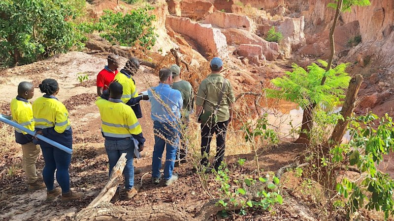
040SMH Business · 2026-10-01 16:29:07+10:00
↗Bonanza gold hits keep rolling for Aurum in West Africa
Headlines 041—052 12 stories
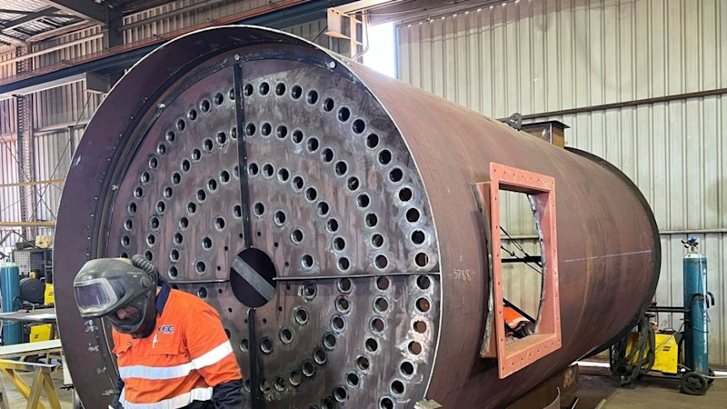
041SMH Business · 2026-10-01 16:09:12+10:00
↗042Broken Hill bags remnant gold ahead of SA mine restart
The Guardian · 2026-10-03 19:00:08 UTC
↗043Is now a good time to switch banks for a better home loan rate? Here’s what to know after the latest RBA hike
The Guardian · 2026-10-02 15:00:15 UTC
↗Inside the group chats of the trash-talking NSW young Liberals who dreamed big – then imploded
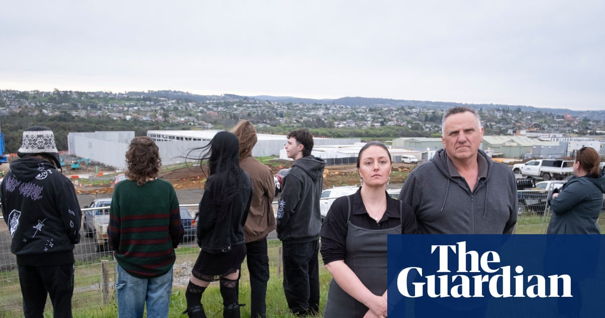
044The Guardian · 2026-10-02 15:00:12 UTC
↗045‘These guys are just coming from nothing’: questions over multibillion-dollar Firmus float amid datacentre backlash
The Guardian · 2026-10-02 07:31:29 UTC
↗046Shoebridge pledges Greens members will ‘have a say’ in next leader – as it happened
The Guardian · 2026-10-01 07:26:51 UTC
↗First home buyers with big loans among those most at risk of falling into negative equity, RBA warns
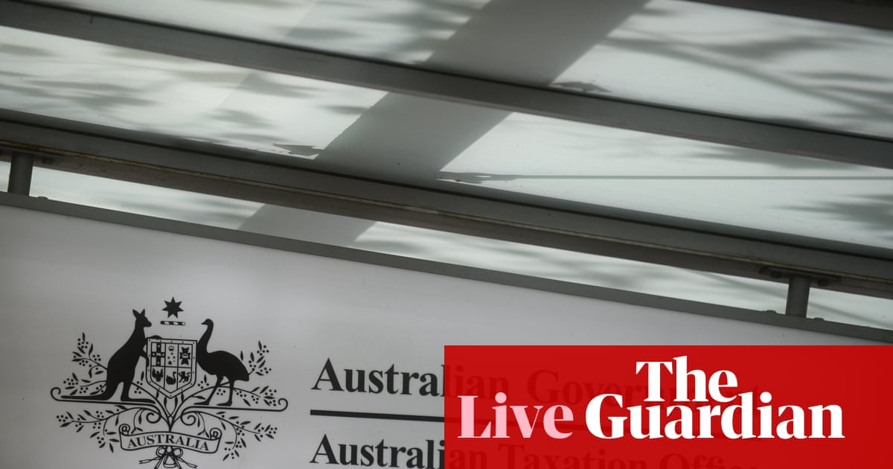
047The Guardian · 2026-10-01 07:15:25 UTC
↗048Australia news live: NSW seeks to join Queensland in ‘from the river to the sea’ ban case – as it happened
The Guardian · 2026-10-01 06:16:39 UTC
↗Billions of dollars, none of it taxed: ATO reveals the tech giants paying zero income tax
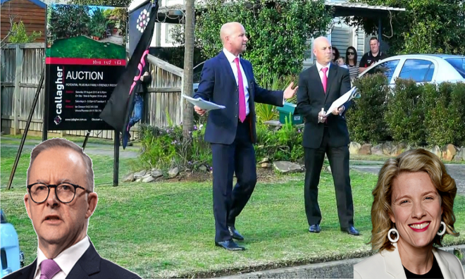
049MacroBusiness · 2026-10-04 00:46:34 UTC
↗050RBA rate hike smashes auction market
MacroBusiness · 2026-10-03 00:39:10 UTC
↗051The economic week in review
MacroBusiness · 2026-10-02 14:01:41 UTC
↗052Weekend reading & MB media appearances
MacroBusiness · 2026-10-02 02:00:34 UTC
↗How is Australia’s energy transition really going?
Headlines 053—060 8 stories
053 058
058
MacroBusiness · 2026-10-02 01:30:00 UTC
↗054Bonds, Aussie bonds
MacroBusiness · 2026-10-02 01:00:01 UTC
↗055Mortgage stress surges with worse to come
MacroBusiness · 2026-10-02 00:30:31 UTC
↗PIIGS turn FIIGS
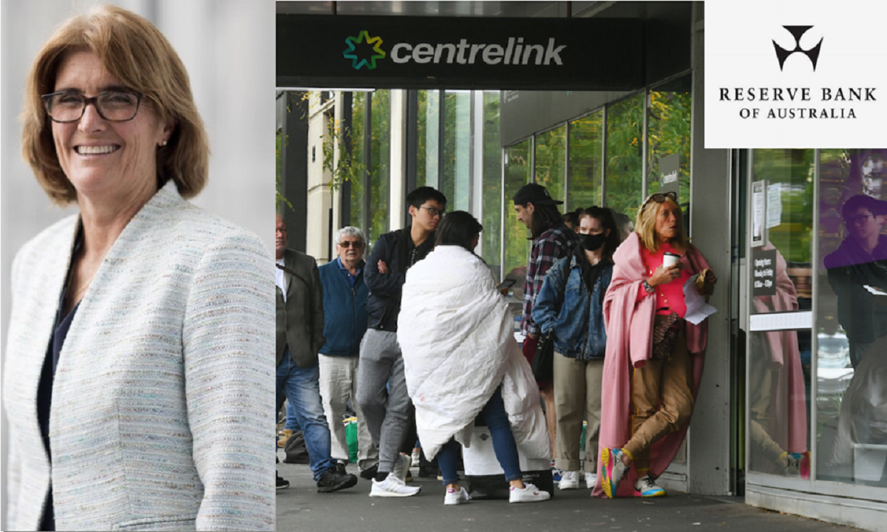
056MacroBusiness · 2026-10-02 00:00:55 UTC
↗057Aussie unemployment is set to jump
MacroBusiness · 2026-10-01 23:30:23 UTC
↗Australian dollar hammer of doom
058MacroBusiness · 2026-10-01 23:00:46 UTC
↗059War escalation at home and abroad
MacroBusiness · 2026-10-01 22:00:58 UTC
↗060House prices on track for largest fall in 40 years by Christmas
MacroBusiness · 2026-10-01 14:01:46 UTC
↗